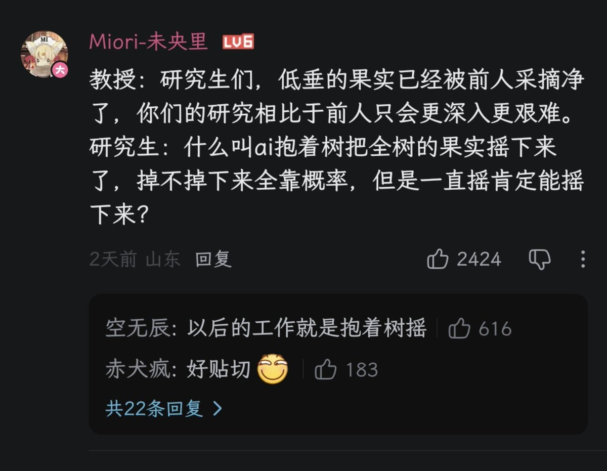

孙悟元
@wuyuandev
教授：研究生们，低垂的果实已经被前人采摘净了，你们的研究相比于前人只会更深入更艰难！
研究生：什么叫ai抱着树把全树的果实摇下来了，掉不掉下来全靠概率，但是一直摇肯定能摇下来？

leo 🐾
@synthwavedd
I am told the Hodge Conjecture is very close to being verified by OpenAI, and that one of OpenAI or Anthropic are also close to solving Birch-Swinnerton-Dyer. The race to be 'next' behind the scenes is unlike anything I've had described to me before
If true - and it may not be,